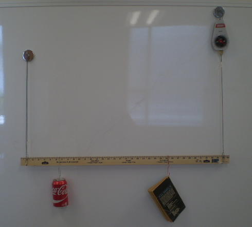

The three conditions of static equilibrium are:
In words, the sum of all the forces acting in the x-direction is zero; the sum of all the forces acting in the y-direction is zero; and the sum of all the torques is zero.
In this experiment, we will verify the static equilibrium conditions by re-creating three static equilibrium word problems. The choice of force magnitudes, points of application and angles will be a matter of personal choice. The goal is to calculate all forces for each system and compare the results to measured values.
A traffic light is hanging from two wires set at known angles. What is the magnitude of the tension in each wire?
Set up this system based on the figure. Hang an object of known mass from the center of a meter-long string with loops on both ends for attaching the spring scale. It may be easier to tie a second shorter string to the center of the first string and tie the object to the short string. Hold the long string in such a way that two different angles, θ1 and θ2, are formed. It may be helpful to have an assistant, or tie one end of the string to a fixed object.

An experimental example of the Traffic Light word problem.
Record the mass or weight of the object and the two angles on the Report Sheet and solve for the two tensions. You can set the system down while you are doing this, or you can immediately measure the two tensions before doing the calculation. If you measure the tensions last, be sure to re-create the system with the exact same angles.
Carefully attach the spring scale to one end of the string by holding the loop with the hook, making sure that the two angles of the string have not changed. Record the tension, T1, on the Report Sheet. Repeat this procedure for the other end of the string, recording the second tension, T2, on the Report Sheet.
An experimental example of the Traffic Light word problem with the spring scale attached.
Compare the calculated tensions with the experimental values measured by the spring scale.
Note: This system is only vector addition and does not require the calculation of torques.
Two painters with different masses are standing on a scaffold of a certain length and different distances from each end. The cables supporting the scaffold are vertical and attached to each end. What is the tension in each cable?
Set up this system based on the figure using a meter stick or yard stick. Tie two strings about 50 cm long to each end of the stick. The other end of each string should have a loop in it for attaching the spring scale.
An experimental example of the painters on a scaffold word problem.
Tie or hang two objects with different masses from two points on the stick. The locations should be chosen so that the system is not symmetrical (not the same distance from each end of the stick). Hold the strings so that the stick is horizontal.
Record the distances, masses, and the mass of the stick (usually around 100 grams) on the Report Sheet. Solve for the tension in each string.

An experimental example of the painters on a scaffold word problem with spring scale added.
You can set the system down while you are doing this, or you can immediately measure the two tensions before doing the calculation. In either case, when measuring the tensions make sure the stick is horizontal.
Carefully attach the spring scale to the loop of one string by holding the loop with the hook, making sure that the spring scale is vertical and the stick remains horizontal. Record the tension, T1, on the Report Sheet. Repeat this procedure for the other string, recording the second tension, T2, on the Report Sheet. Compare the calculated tensions with the experimental values measured by the spring scale.
Note: all angles between applied forces and the horizontal stick are 90 degrees.
A crate is hanging from a boom set at a certain angle and held in place by a horizontal cable. What is the tension in the cable?
Set up this system based on the figure. Tie a string about 50 cm long (the 'cable') from a point on a meter stick around 5 cm from the end. The other end of each string should have a loop in it for attaching the spring scale. Hang a mass from a short string tied to some point on a meter stick (the green block in the figure). Anchor the pivot point of the stick (the lower end on the left side of the figure) to a flat surface. Hold the longer string horizontally and choose an angle θ. Angles of 30, 60 or 45 degrees can make the calculations easier.
An experimental example of the angled boom word problem.
Record the distances to the two attachment points from the pivot point, as well as the mass of the hanging object and the angle of the stick on the Report Sheet. Solve for the tension in the horizontal string.
You can set the system down while you are doing this, or you can immediately measure the tension in the horizontal string before doing the calculation. In either case, when measuring the tension make sure the string is horizontal and the angle of the stick is the same as in the original position.
Attach the spring scale to the loop in the horizontal string and record the tension on the Report Sheet. Compare the calculated tension with the experimental value measured by the spring scale.
An experimental example of the angled boom word problem with spring scale added.
Note: Choose the pivot point at the base as the center of torque when calculating the tension in the string.
Solve each problem clearly and completely, starting from first principles, including all steps and the values of initial parameters. Comment on the error between calculated forces and measured forces, and account for any significant differences.
Submit your completed report sheet to the Lesson 12 Lab: Static Equilibrium assignment folder.
Note: your lab Report Sheet should be completed by hand. You will need to scan and upload the completed document as a PDF to the assignment folder.